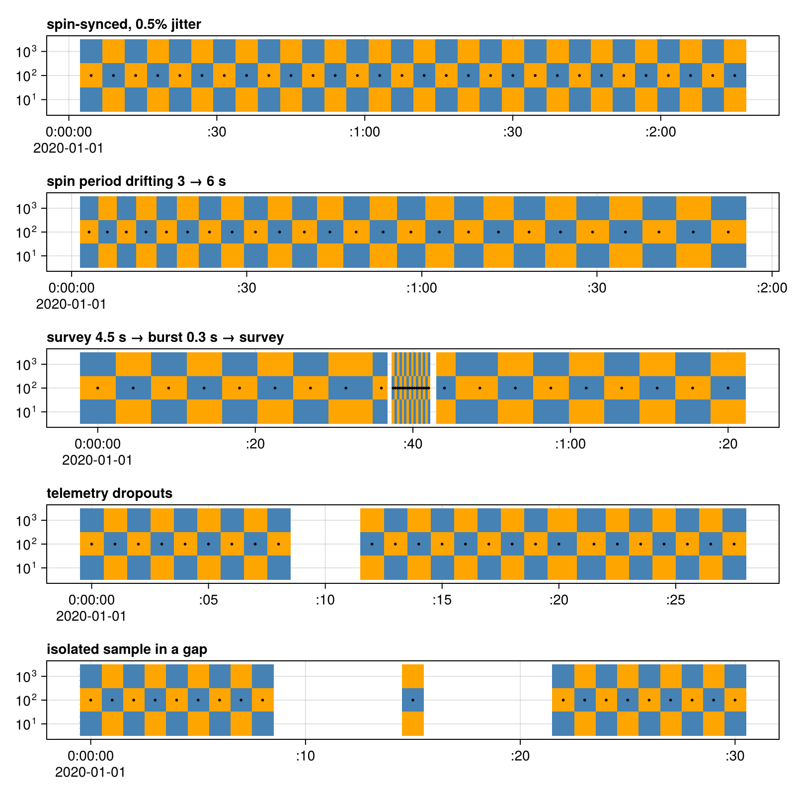

Spectrograms
specplot draws every sample as one flat cell per channel. Channel edges sit halfway between channel centers in the axis' y scale (geometric midpoints on a log axis). A sample spans half its local cadence on each side. Its local cadence is the smaller spacing to its neighbours.
Below, cells alternate color and dots mark the sample times:
using CairoMakie, Dates, DimensionalData, SpacePhysicsMakie
t0 = DateTime(2020)
patterns = [
"spin-synced, 0.5% jitter" => cumsum(4.5 .* (1 .+ 0.005 .* sin.(1:30))),
"spin period drifting 3 → 6 s" => cumsum(range(3, 6, length = 25)),
"survey 4.5 s → burst 0.3 s → survey" => vcat(0:4.5:36, 37.5:0.3:42, 44:4.5:80),
"telemetry dropouts" => vcat(0:1.0:8, 12:1.0:20, 21.5:1.0:28),
"isolated sample in a gap" => vcat(0:1.0:8, 15, 22:1.0:30),
]
channels = [10.0, 100.0, 1000.0]
f = Figure(size = (800, 160 * length(patterns)))
for (row, (title, seconds)) in enumerate(patterns)
t = t0 .+ Millisecond.(round.(Int, 1000 .* seconds))
A = DimArray([isodd(i + j) for i in eachindex(t), j in eachindex(channels)], (Ti(t), Y(channels)))
ax = Axis(f[row, 1]; title, titlealign = :left, yscale = log10)
specplot!(ax, A; colormap = [:steelblue, :orange])
scatter!(ax, t, fill(100.0, length(t)); color = :black, markersize = 4)
end
f
When a cell is narrower than a pixel of the view, neighbouring cells are merged into one with the bin setting (mean by default; e.g. maximum keeps short bursts visible, nothing draws every sample). Panning or zooming merges them again, so zooming in shows full resolution.